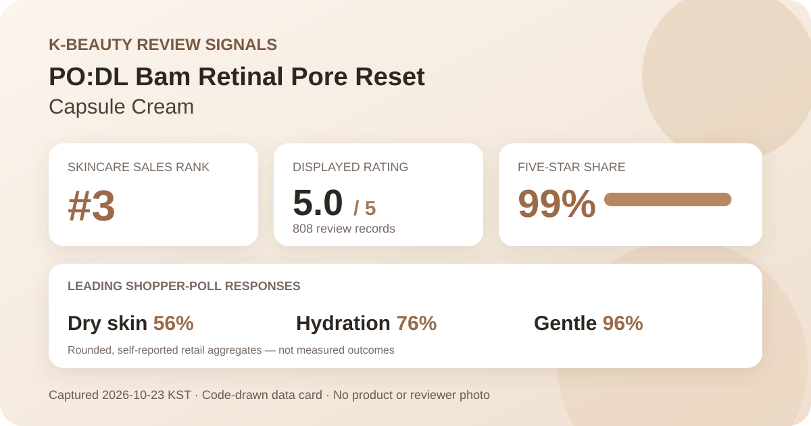
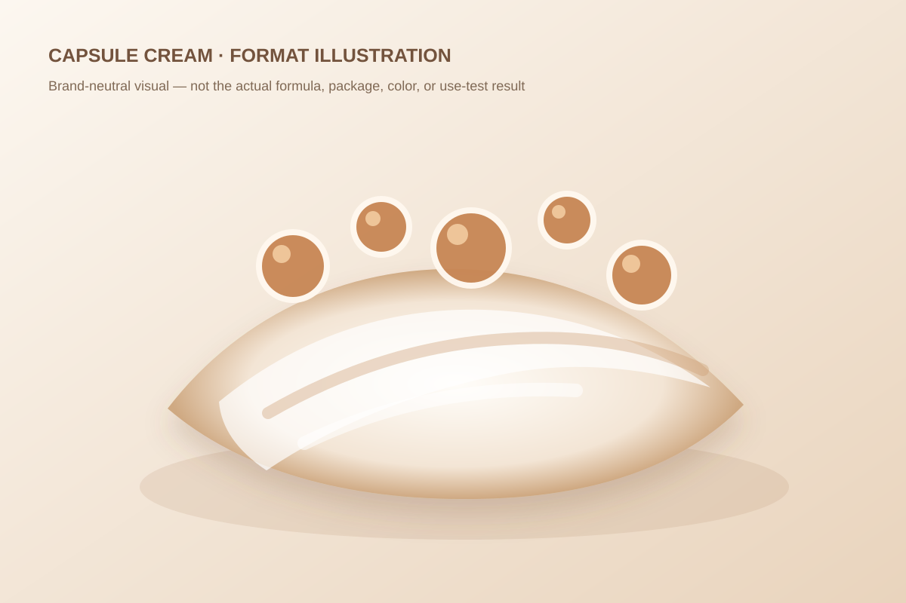

Data captured October 23, 2026. This analysis uses only a Korean K-beauty retail platform's displayed aggregate rating, star shares, anonymous shopper polls, and retailer-level automated theme summary. It does not reproduce or translate individual review text, names, or photos.

The short version: The listing showed 5.0 out of 5 from 808 review records. Five-star selections accounted for 99% of the displayed distribution. Dry skin led the skin-type poll, hydration led the concern poll, and 96% selected the gentle response. These are retail signals, not measured skin outcomes.
The visible average was 5.0 stars. The product header displayed 808 review records, and the detailed review panel repeated the same count and average. That agreement matters because it reduces the risk of joining a current score to a count from another PO:DL item, a different size, or an older snapshot.
The detailed panel displayed these rounded shares:
The rows total 100%, but they are still whole-number percentages. A zero-percent row can hide a very small number of selections after rounding, while the one-percent four-star row explains how the storefront can show a rounded 5.0 rather than a mathematically perfect score. The defensible reading is strong displayed satisfaction, not unanimous approval or proof that the cream changes skin structure.
Eight hundred eight records provide more context than a newly listed product with only a handful of ratings. They do not eliminate selection bias, incentive effects, changing promotions, differences in routine, or short use periods. Retail averages summarize people who chose to submit a rating; they are not randomized comparisons.
The displayed skin-type poll showed 56% dry, 35% combination, and 9% oily. Dry skin was the largest group, but more than four in ten displayed responses came from combination or oily categories.
This distribution tells us how poll participants labeled themselves. It does not show that the cream worked better for dry skin or that an oily-skin user should avoid it. Skin-type labels are self-reported and can shift with season, climate, cleansing, medication, and other routine steps. The interface also does not disclose a controlled denominator for each response or whether the product was the only routine change.
The concern poll displayed 76% hydration, 19% wrinkle or brightening concern, and 6% soothing. Those rounded shares total 101%, an ordinary artifact of whole-percentage display rather than evidence of an extra category or exact respondent counts.
Hydration's lead makes the page relevant to readers comparing cream-format datasets with a moisture-oriented audience. It does not measure water content, transepidermal water loss, barrier function, or duration of moisturization. Likewise, the wrinkle or brightening option is a shopper-selected concern, not an independently verified change in wrinkles, tone, or pigmentation.
The irritation poll showed 96% gentle, 4% ordinary, and 0% felt irritation. The gentle response is clearly dominant in the captured interface, but the displayed zero must not be translated into “irritation-free.” Whole-number rounding can conceal a very small share, and a retailer poll cannot predict one person's response.
The product name includes “retinal,” yet this capture did not independently verify ingredient identity, concentration, delivery, stability, or directions. Readers who already use retinoids, have a history of sensitivity, are pregnant or breastfeeding, or are treating a skin condition should use the current regional label and appropriate professional guidance rather than a crowd poll.
The retailer's automated recent-review summary labeled 100% of its analyzed subset as positive. It grouped discussion into broad themes around the capsule format and spreadability, pore or firmness impressions, and mild-feeling night-care use. Those categories are machine-generated navigation cues for a recent subset, not outcomes measured across all 808 records.
This article does not reproduce or translate the underlying reviews. It also does not treat the generated wording as a product claim. A pore theme is not a measured pore-area result; a firmness theme is not an elasticity test; and a mildness theme cannot guarantee tolerance. The summary is useful only as a map of recurring discussion topics.

The retailer places the item in the cream category and calls it a capsule cream. In general format terms, capsule creams combine visible or suspended beads with a surrounding cream or gel base that is mixed during application. That broad description does not reveal this product's actual capsule material, viscosity, scent, spread, absorption speed, residue, stability, or compatibility with another routine.
I did not handle or apply this product. The illustration above is intentionally generic and should not be read as a reconstruction of the real color, thickness, ingredients, capsule count, or finish. The current label should determine application order, frequency, precautions, and storage. The presence of “retinal” in a title is not enough to infer a concentration or compare potency with another formula.
At capture, the Korean listing showed a ₩35,000 reference price and a ₩27,360 promotional price for 55 g. The page also displayed a price-per-100 ml convention even though the title used grams. This is a dated storefront snapshot, not a standing value claim or an invitation to treat mass and volume as interchangeable.
Price, coupon eligibility, gifts, stock, seller, and pack presentation can change. The 808 linked records may span earlier prices, promotions, packaging, or formula presentations rather than only the version visible on October 23. Before comparing value, verify the current size, regional label, checkout total, return terms, and directions.
The narrow, defensible reading is that PO:DL Bam Retinal Pore Reset Capsule Cream was the first distinct unpublished product after two higher-ranked listings were excluded for existing coverage; it held skincare rank 3; its header and review panel agreed on a rounded 5.0 average across 808 records; 99% of the displayed star selections were five-star; dry skin led the skin-type poll; hydration led the concern poll; and the gentle response led the irritation poll.
Those signals make the product notable within the current Korean retail snapshot and useful for comparing capsule-cream datasets. They do not justify calling it clinically pore-minimizing, firming, wrinkle-reducing, universally gentle, or a substitute for professional advice. A sensible next step is to check the current regional ingredient list and directions, consider one's tolerance history, and introduce unfamiliar actives cautiously.
Dry skin was the largest displayed skin-type response at 56%, followed by combination skin at 35% and oily skin at 9%. That describes poll representation, not proven suitability or a guaranteed result.
The retailer's anonymous automated summary grouped recent comments around pore and firmness impressions, but that theme is not a measured endpoint, a clinical result, or proof of structural change.
The captured irritation poll showed 96% gentle, 4% ordinary, and 0% felt irritation. Rounded self-reported shares cannot predict individual tolerance, and a displayed zero does not prove zero reactions.
The listing identifies a capsule cream, and the automated summary included a capsule-texture theme. This analysis did not apply the product and does not claim a specific viscosity, scent, absorption speed, or finish.
It is a rounded retail satisfaction signal across 808 linked records. It is not a clinical trial, proof of efficacy, or a prediction for one person's skin.
Source: Olive Young Korea product page, captured October 23, 2026. Product title, ranking, pack, price, rating, review count, star shares, poll values, and automated summary can change.
Published by The K-Beauty Data Desk. The source does not independently verify every buyer's identity, and this page is an editorial analysis of retailer-displayed aggregates—not medical advice or a substitute for the current product label.
← All reviews · Review-volume rankings · Skin-poll explorer · Methodology